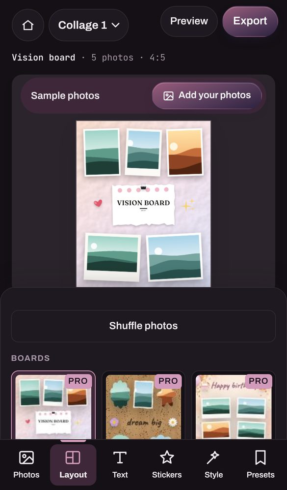
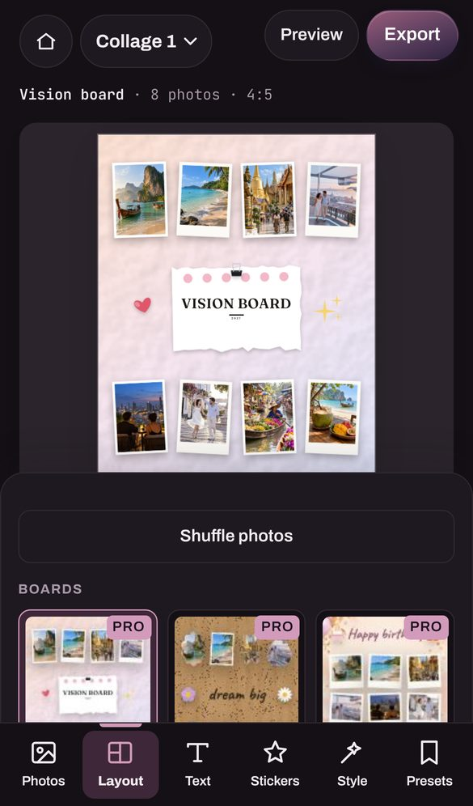
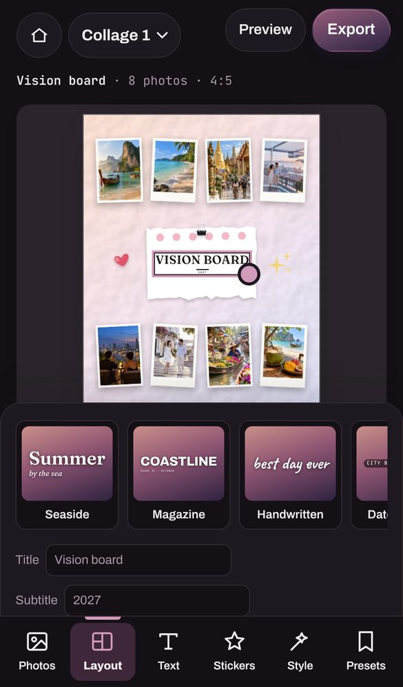
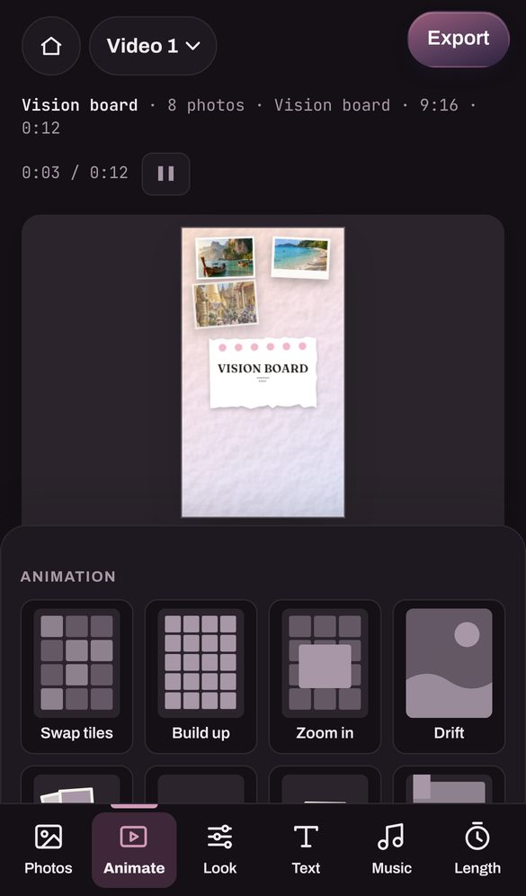

Guide · Collage & boards
How to make a 2027 vision board on your phone
Eight photos of places I want to go back to, from Thailand and Lisbon, on one board for the new year. Then the same board, turned into a short video. Here's every step, with the real screens.

01
Pick the Vision board
I opened Swipefold, chose Collage & boards, and under Boards tapped Vision board. It starts with sample photos so you can see the layout straight away.
There are boards for birthdays, best friends, a year of memories, a trip and more. Swipe the row to see them all.

02
Add the photos that feel like next year
I tapped Add your photos and picked eight: the cliffs at Railay, a quiet beach, the Grand Palace, a balcony over Lisbon, a rooftop at night, dancing in a tiled street, a floating market and a coconut by the sea.
A board holds five to eight photos. Set how many under Photos on the board, and the layout makes room around the title so nothing overlaps.
Don't have photos of your goals yet? Use your own photos of places, people and moments that feel like the year you want.

03
Make the words yours
Tap the title to change it. I kept Vision board with 2027 underneath, but "Places I'll go" or "This is my year" work just as well. The styles above the boxes change the font and the look in one tap.
Tap a photo and drag to choose what shows, or tap Shuffle photos to try a new order. Stickers adds a few finishing touches.

04
Export it, or make it move
Export saves the board in one tap. The 4:5 size suits an Instagram post. For a phone wallpaper or a Story, switch to Story 9:16 first.
Then I tapped Make video from this board. Swipefold built a 9:16 video where the title appears and the photos drop onto the board one by one. Add music under Music and it's ready for Reels.

Three tips for a board you'll actually look at
Boards are part of Swipefold Pro. Without Pro you can still make and export your board. It's saved with a small "Made with Swipefold" mark.


Make your own board
Swipefold is free to try, with no account. Your photos stay on your phone.